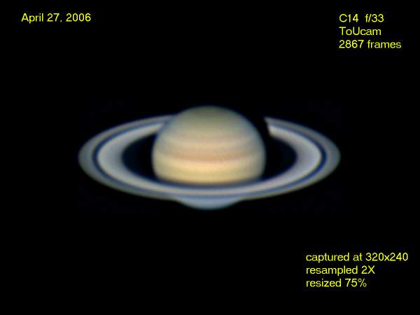
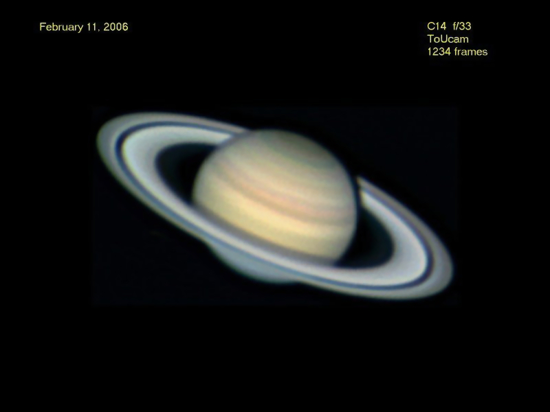
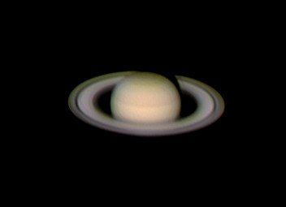
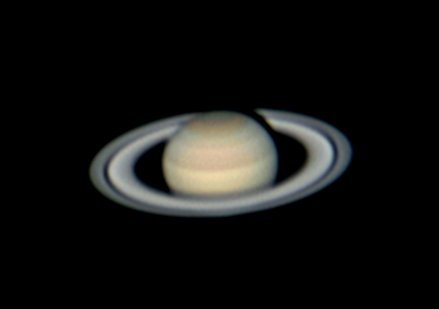
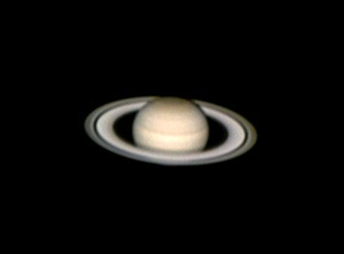
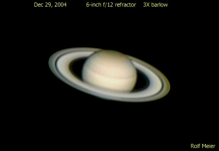

The most recent images are at the top. Please send me your comments.
The images can be used for educational purposes as long as credit is provided.
Copyright Rolf Meier
Ottawa, Ontario, Canada
Unless otherwise noted, images are stacked using Registax3, wavelet processing is applied, and final adjustments are made using Paint Shop Pro.
Return to Home page.
April 27, 2006

C14 at f/33; ToUcam Pro
Seeing fair. 5 fps
February 11, 2006

C14 at f/33; ToUcam Pro
Seeing good. 5 fps
March 26, 2005 01:54 UT

6-inch Astrophysics Super Planetary Refractor at f/36; ToUcam Pro
Seeing good. 5 fps
February 18, 2005

10-inch Meade SCT; ToUcam Pro
Seeing fair. This image was taken while on vacation in Arizona using a telescope owned by David Levy.
January 24, 2005 04:31 UT

6-inch Astrophysics Super Planetary Refractor at f/36; ToUcam Pro
Seeing good. 1600 frames, 5 fps
December 30, 2004 05:14 UT

6-inch Astrophysics Super Planetary Refractor at f/36; ToUcam Pro
Seeing good. 2300 frames, 5 fps